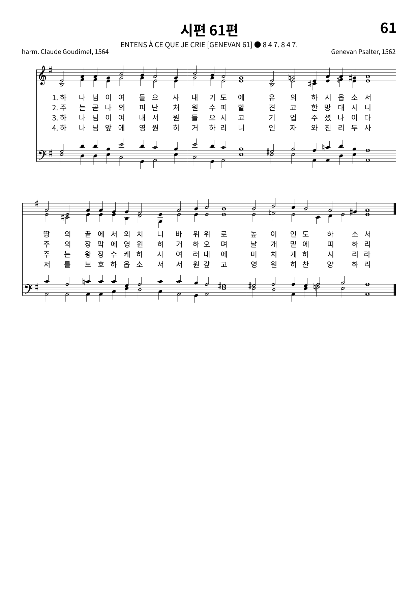

Psalm 61
ENTENS À CE QUE JE CRIE [GENEVAN 61] · 8 4 7. 8 4 7.
English title: Listen to My Cry and Hear Me
Tune: Genevan Psalter, 1562 · Harmony: Claude Goudimel, 1564 · Lyrics: Korean adaptation of Psalm 61 from the Korean Revised Version (AI draft adaptation · not yet theologically reviewed) · 4 stanzas
Score PDF MusicXML (for printing) MusicXML (for accompaniment, with prelude and repeats) Read Psalm 61 (Korean Revised Version)
Score
← Psalm 60 ListAccompaniment (in preparation)Psalm 62 →
Lyrics (Korean)
Stanza 1 (Ps. 1~2)
하나님이여 들으사
내 기도에
유의하시옵소서
땅의 끝에서 외치니
바위 위로
높이 인도하소서
하나님이여 들으사
내 기도에
유의하시옵소서
땅의 끝에서 외치니
바위 위로
높이 인도하소서
Stanza 2 (Ps. 3~4)
주는 곧 나의 피난처
원수 피할
견고한 망대시니
주의 장막에 영원히
거하오며
날개 밑에 피하리
주는 곧 나의 피난처
원수 피할
견고한 망대시니
주의 장막에 영원히
거하오며
날개 밑에 피하리
Stanza 3 (Ps. 5~6)
하나님이여 내 서원
들으시고
기업 주셨나이다
주는 왕 장수케 하사
여러 대에
미치게 하시리라
하나님이여 내 서원
들으시고
기업 주셨나이다
주는 왕 장수케 하사
여러 대에
미치게 하시리라
Stanza 4 (Ps. 7~8)
하나님 앞에 영원히
거하리니
인자와 진리 두사
저를 보호하옵소서
서원 갚고
영원히 찬양하리
하나님 앞에 영원히
거하리니
인자와 진리 두사
저를 보호하옵소서
서원 갚고
영원히 찬양하리